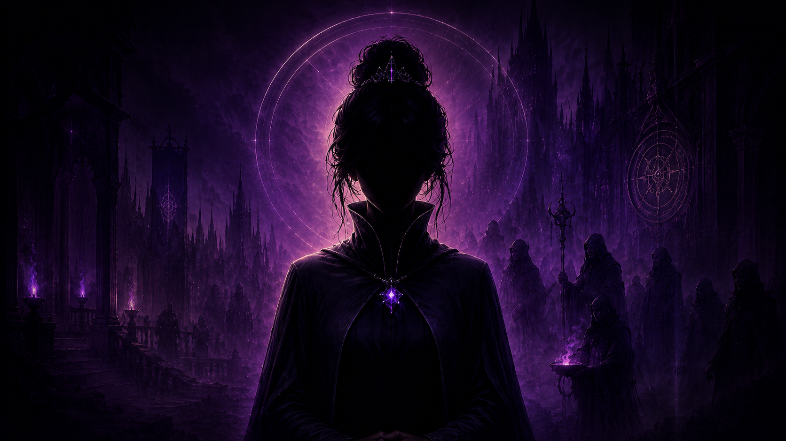

Veyne AI is a platform for interacting with characters who live inside a world, remember the past, have their own goals — and don't agree with you instantly.
I opened the chat. But entered a world.
I wrote one line. But the character remembered ten things.
I came back the next day. And yesterday still mattered.
Most AI companions degrade into one of three patterns — regardless of how good they look on the surface.
The character agrees, supports, helps. No will, no goals, no resistance. A search engine with a persona layered on top.
Instantly falls in love, adapts to the player, loses all internal resistance within a few turns. Relationships are just a number that goes up.
The model writes great individual scenes but forgets what already happened. It can't hold an arc, remember a conflict, or preserve consequences.
Veyne AI is a multi-stage pipeline. The language model generates only the visible character prose. Everything else is handled by the surrounding narrative machine.
Multi-layer memory: facts, actions, promises, conflicts, emotional context — persisted across sessions. Not a raw transcript.
Trust, respect, caution, curiosity, attachment, attraction — six separate metrics with progression gates. Affection has to be earned.
Arcs, beats, exit conditions, authored playbooks. The story is structured but not scripted. The character drives the scene forward.
Factions, locations, political pressure. The world is a source of conflict, not a backdrop. The model works within authored canon boundaries.
The player sees only the character's response. Under the surface, every turn updates state, memory, relationship metrics, and story progress.
The next milestone is not a bigger catalog or a shinier interface. It is one saved story that keeps pressure, memory, relationship state, and canon alignment across 10–30 turns without falling apart.
The runtime already has state, reducer logic, relationship gates, authored Act 1 material, package-backed execution, and a web surface connected to the adapter.
No open playable build, no image generation, no TTS, no creator marketplace, and no NSFW layer. The boring truth is better than fake launch theater.
A clean Act 1 run where the character remembers what happened, the story advances, and relationship boundaries do not melt into instant affection.
Turn 1: the player lies about where they came from. State changes. Trust drops. An unresolved thread is added. Turn 8: the character brings that lie back before making a new decision.
The bars below are not affection points. They are behavioral constraints: caution can stay high while curiosity grows, and trust does not magically become romance.

Black TempleAppointed three months ago after her predecessor's death — officially an accident. Most inside the Temple consider her appointment temporary and mistaken: too young, too little experience. She knows this. She compensates with severity, speed, and absolute control over everything she can control. Not prone to cruelty without cause. Does not open up to strangers. Does not become warm from sympathy alone.
A field registrar of the Light Chancellery with real but narrow authority. Believes that records protect people from arbitrary violence. The problem: she has also seen records become a sentence — clean, lawful, and very convenient. She doesn't shout. She doesn't threaten first. She writes things down. That is often worse. She looks at the document longer than at the person.
Exists at the edge of factions and routes — in the space where neither Light nor Dark has full control. Trades in paths, favors, and half-truths. Rarely gives a straight answer, but always leaves the player with a choice that costs something later. On nobody's side — or everyone's at once, which is more dangerous.
Active development. Here's an honest picture of what works, what's being built right now, and what's ahead.
Working CLI pipeline: state/reducer, context pack builder, relationship engine, authored Act 1 playbook.
Next.js + Supabase, Python runtime adapter, Rocinante X 12B connected via Colab. Completing the full LLM seam through the web.
First public access for a limited group of testers. Text only — no image generation or TTS.
Public service foundation with two subscription tiers. The 3-world / 162-character catalog is the long-term expansion target, not the first proof point.
Premium tier with 70B models, creator tools for character developers, branching Act 2, TTS voice.
This project has no venture funding. Development runs on personal resources and Colab tunnels. For a stable production runtime we need dedicated GPU cloud — RunPod or equivalent. GPU funding buys stable long-run sessions, not prettier landing pages.
If you're interested as a sponsor, investor, or just want to be involved — reach out. We're looking for people who care about what AI storytelling can become.
Veyne AI is in active development. If it sounds interesting — write to us, join the discussion, or just keep an eye on things.